Étape 4 · la bande dessinée
Acte 1 · L'arrivée
Une case = une image 16:9, sans aucun texte : les légendes et répliques sont ajoutées dans la présentation. On génère case par case, dans l'ordre. Partie A : COMMANDE traverse les sécurités, révélée petit à petit. Partie B : le QG, chaque membre dans son univers. Partie C : le briefing autour de la table-touret, raconté par COMMANDE.
Partie A · La descente
1La façade
Le bâtiment la nuit, banal et inquiétant, avec la lueur violette sous la grille.
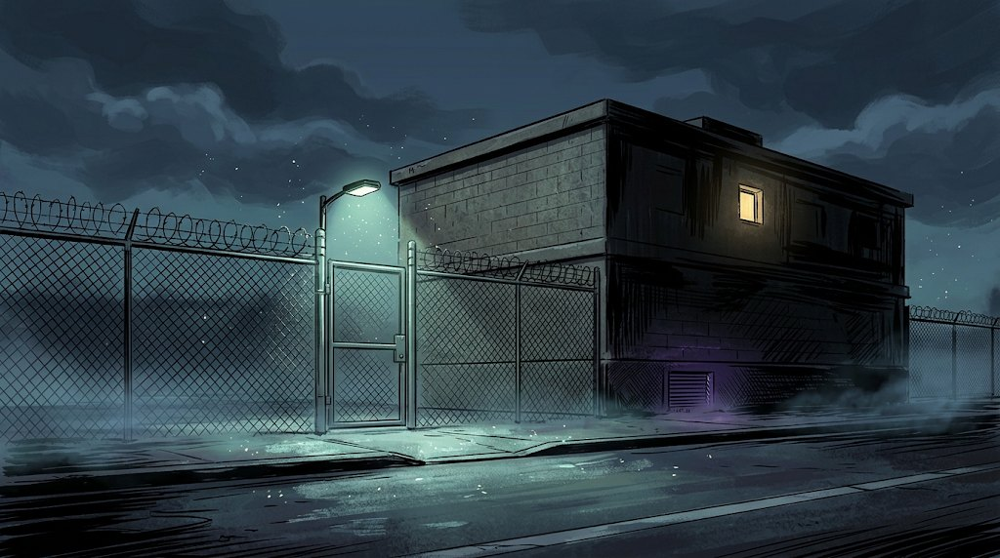
✓ Case validée
2Un pas dans la flaque
Caméra posée au sol : un talon aiguille frappe une flaque en direction du portail ; derrière, le portail et le bâtiment dominent le cadre.
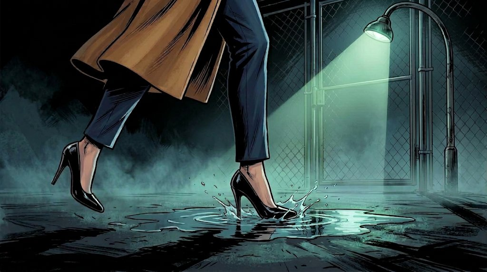
✓ Case validée
3Le badge
Gros plan : les ongles rouges posent un badge sur un vieux lecteur rouillé ; le voyant passe au vert.
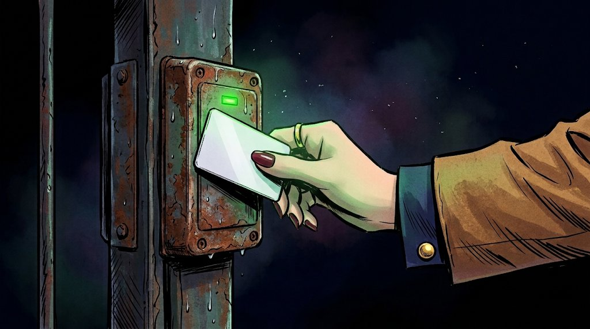
✓ Case validée
4La fausse porte
De dos, le manteau camel passe une vieille porte de service qui grince ; derrière, un sas ultramoderne.
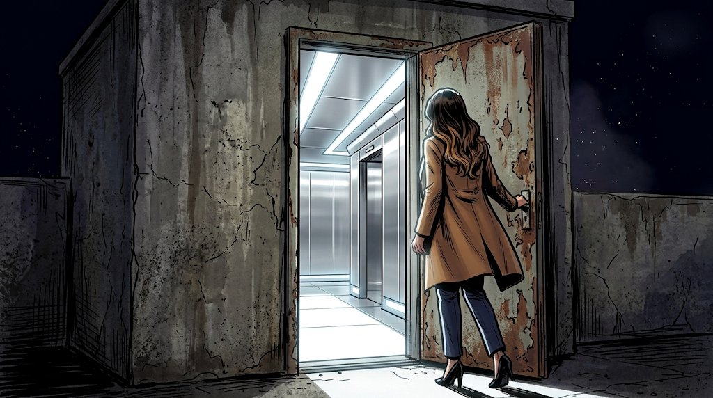
✓ Case validée
5Le digicode caché
Dans le sas ultramoderne, un boîtier technique en acier s'ouvre sur un digicode lumineux ; les ongles rouges tapent le code.
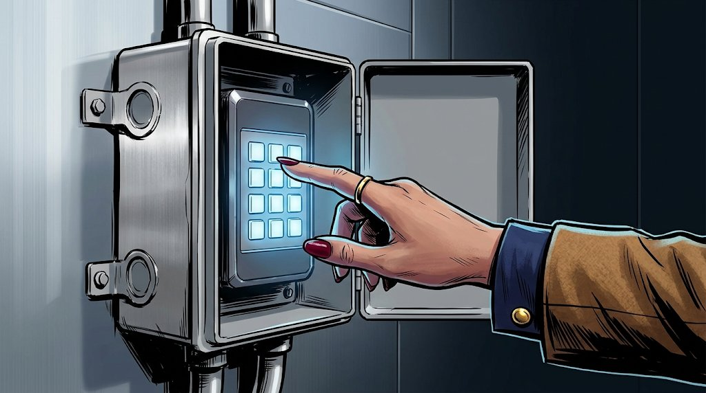
✓ Case validée
6Le portique
De profil, elle traverse un portique détecteur ; sa tablette passe aux rayons X (tête hors cadre).
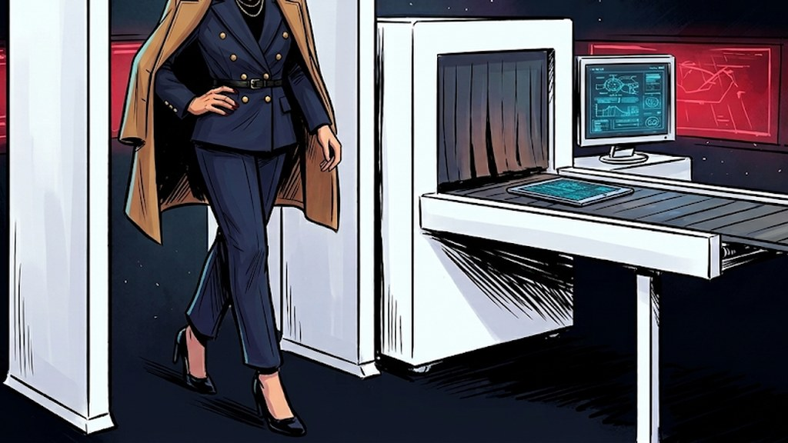
✓ Case validée
7L'œil
Très gros plan sur son œil (eye-liner) face au scanner rétinien ; une ligne rouge le balaie.
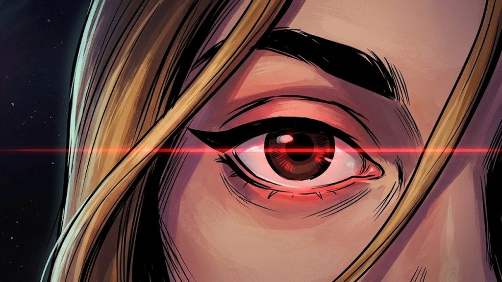
✓ Case validée
8Le sas
Plongée : un sas en acier, porte d'entrée qui se referme à gauche, porte de sortie encore verrouillée à droite ; elle est seule au milieu.
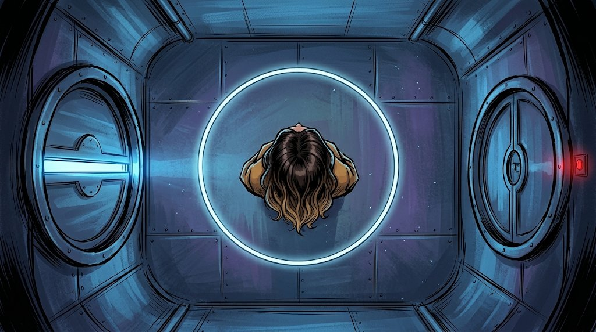
✓ Case validée
9Quelqu'un regarde
Une caméra au plafond pivote pour la suivre ; petite lumière bleue.
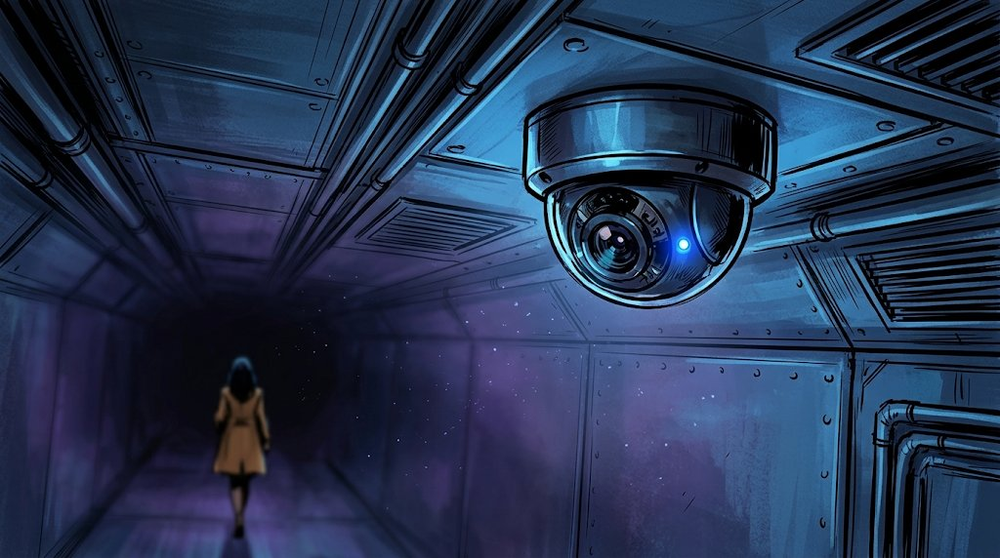
✓ Case validée
10La descente
Dans l'ascenseur, vue de dos : elle fait face aux portes fermées ; l'indicateur d'étage arrive tout en bas.
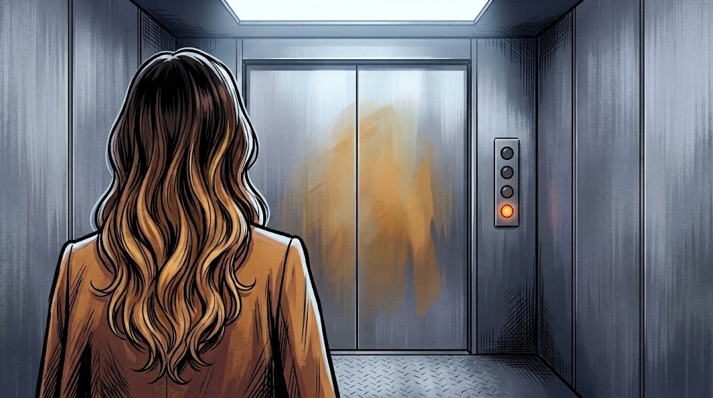
✓ Case validée
11Révélation
Les portes s'ouvrent : premier vrai plan de son visage, de trois quarts, éclairée par la lumière chaude qui entre depuis le QG ; elle regarde le QG, pas nous.
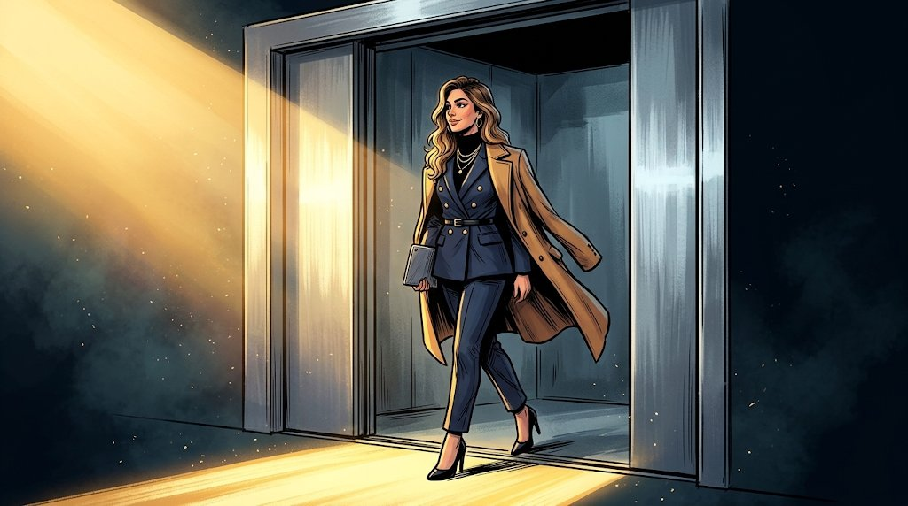
✓ Case validée
Partie B · Le QG
Pas de vue d'ensemble : on passe directement de l'ascenseur aux coins de chacun, le lecteur reconstitue le lieu.
13RELAY
Vue de trois quarts arrière : RELAY vautrée dans le canapé face à la télé, jambes sur l'accoudoir, absorbée par un animé de ninjas ; affiches, figurines, mangas autour.
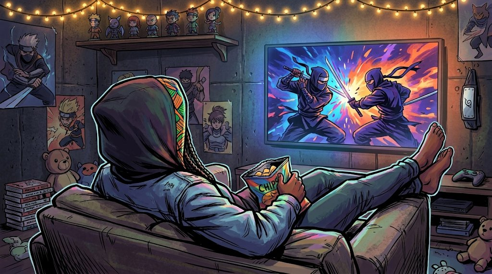
✓ Case validée
14FORGE
Son atelier : mur de baies réseau, la 4L restaurée sur son estrade, la caisse à outils de son père ; il lève le pouce vers COMMANDE qui arrive. Pas de plafond : le fond se perd dans un flou blanc.
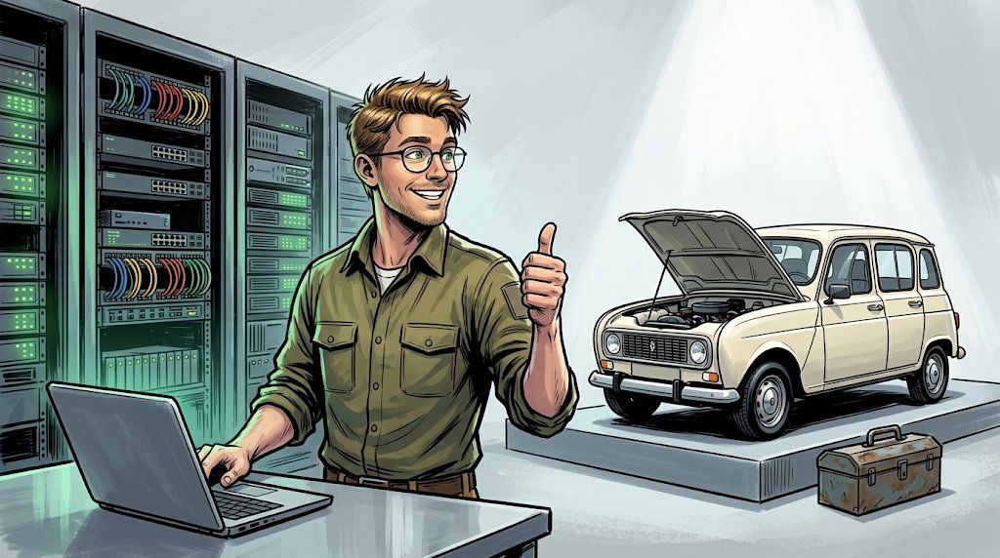
✓ Case validée
15SENTINELLE
Son coin café-jazz : bois, ampoules à filament, vinyle qui tourne, vieux mangas, ballon et mini-panier de basket, petite télé qui passe un match, fausse fenêtre sous la pluie ; il lève la main sans se retourner.
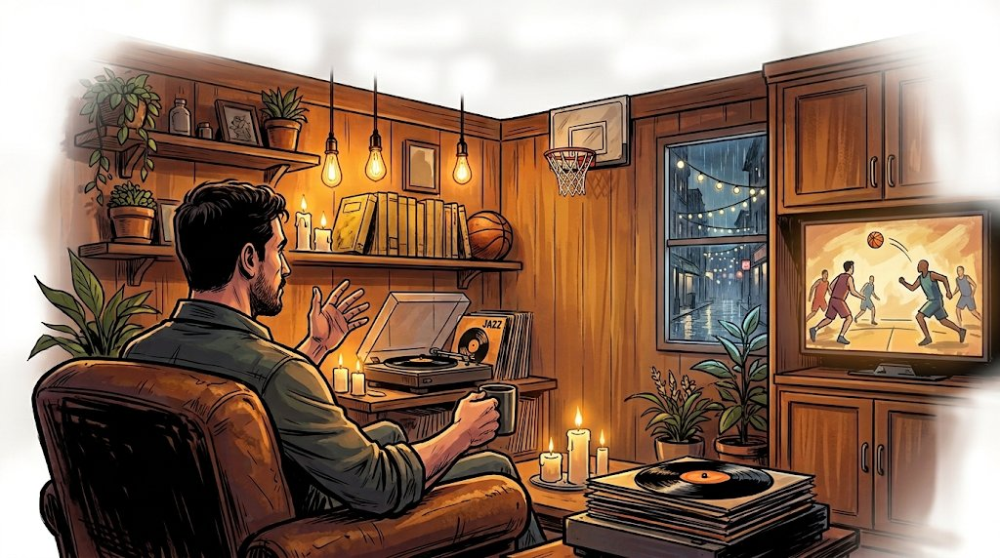
✓ Case validée
16CYPHER
Vu de dos, face à son écran courbé : il marque un but, bras en l'air ; autour, son coin gaming en bazar et ses idées sur des couvercles de pizza punaisés.
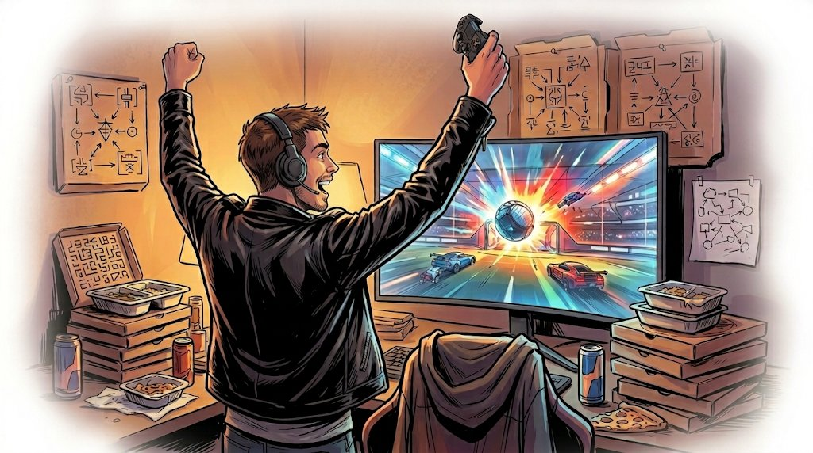
✓ Case validée
17Le bureau de COMMANDE
Bureau vitré en mezzanine : portant de vestes par couleur, mannequin, moodboard mode + cartes tactiques, plante, plaid, photo d'équipe où SENTINELLE est flou ; elle pose le dossier rouge scellé.
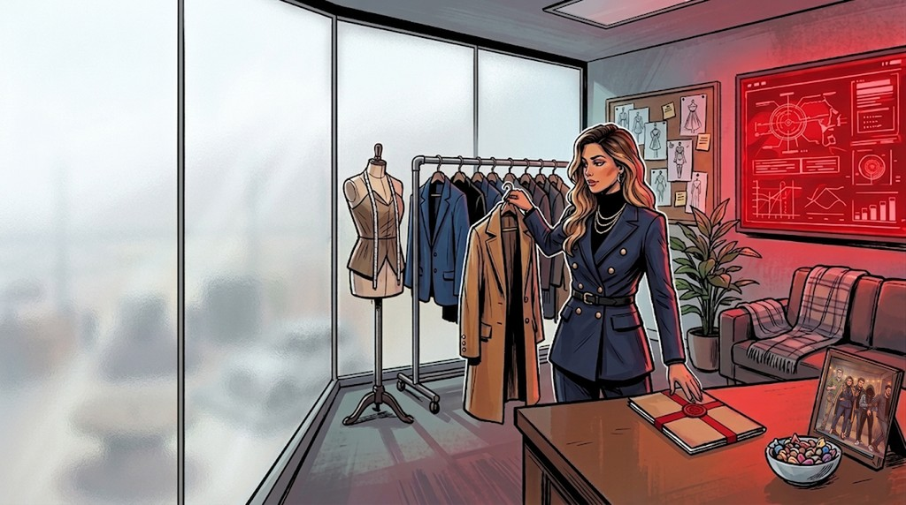
✓ Case validée
18L'appel
Contre-plongée : COMMANDE sur la mezzanine, le dossier à la main ; en bas, les quatre lèvent la tête et lâchent tout.
Légende (présentation) : Everyone, table. Now.
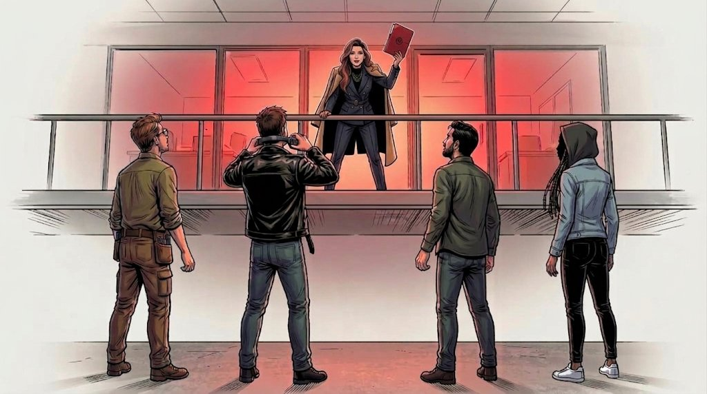
✓ Case validée
Partie C · Le briefing
La table-touret
Un grand touret de câble recyclé, plateau découpé en cinq secteurs par des filets de laiton. Chaque secteur a une icône gravée et un voyant rouge qui passera au vert à la fin de chaque acte technique. Au centre, un dôme de verre avec la carte de la Zone 67. La table sert de sommaire à la présentation. Aucun texte dans l'image : les objectifs sont nommés dans les légendes.
| Icône | Objectif | Agent | Siège |
|---|
| Baie serveur | Le serveur (Proxmox, VMs) | FORGE | siège de voiture ancienne |
| Bouclier | Réseau et accès sécurisés | SENTINELLE | fauteuil club en cuir |
| Bande + cadenas | Protocole Godkiller (sauvegardes) | CYPHER | fauteuil gaming |
| Horloge + flèche circulaire | Reprise et tests de restauration | RELAY | gros pouf coloré |
| Porte de coffre | Protéger l'archive | COMMANDE | chaise haute en velours marine |
20Le dossier
Gros plan : les ongles rouges posent le dossier scellé sur le dôme de verre ; le moyeu s'allume et une onde rouge part dans le bois.
Légende (présentation) : Sub-level 5. What we never talk about.
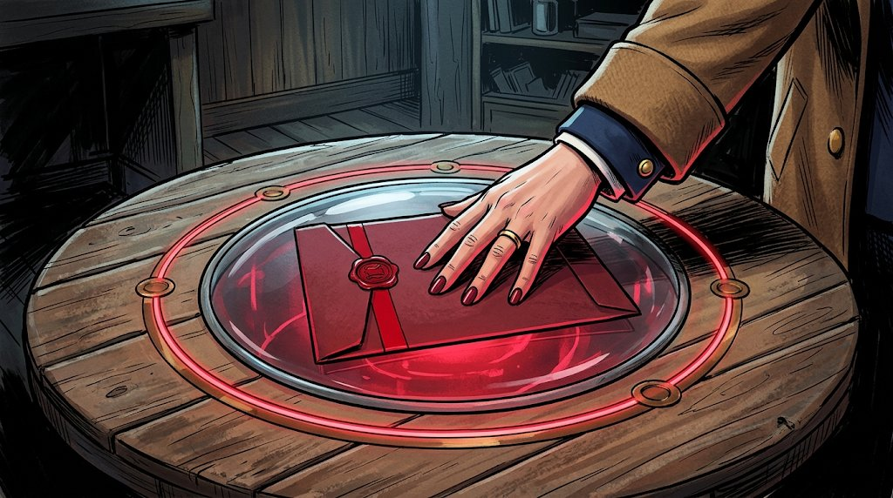
✓ Case validée
21Cinq objectifs
Vue du dessus : les cinq secteurs allumés en rouge, chacun avec son icône ; au centre, la carte de la Zone 67. C'est le sommaire de la présentation.
Légende (présentation) : Five objectives. Five of us.
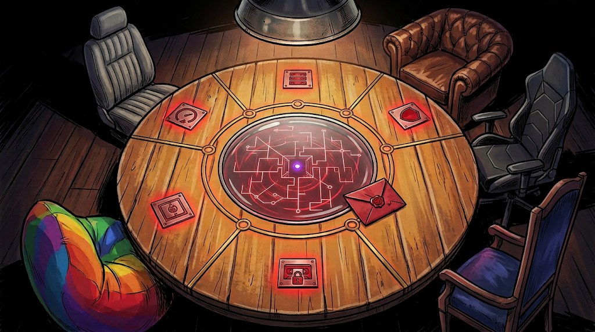
✓ Case validée
22Souvenir · l'archiviste
Flashback raconté par COMMANDE : Recorder 451 seul dans la chambre forte, immobile parmi les cristaux violets.
Légende (présentation) : Below us sleeps the memory of an entire civilisation.
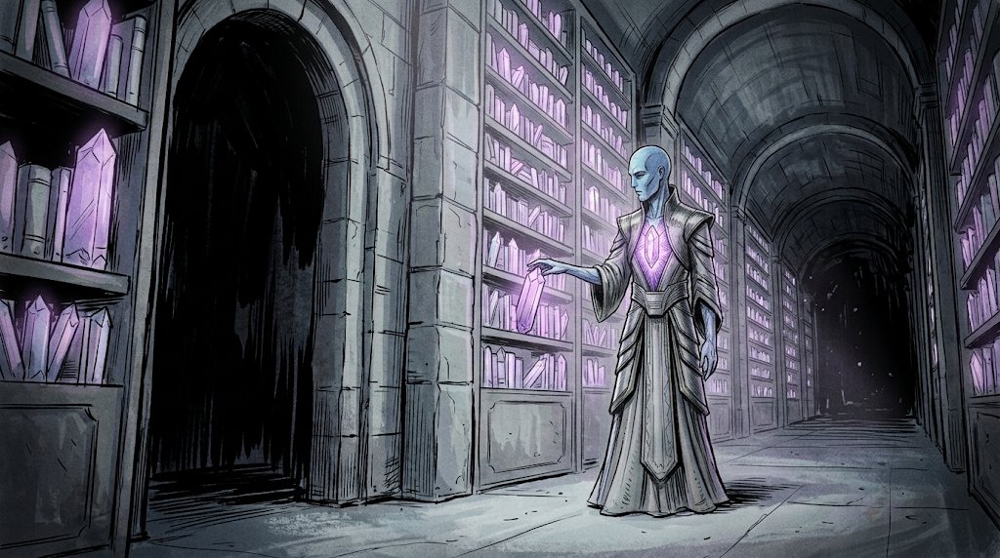
✓ Case validée
23Souvenir · les couloirs
Flashback : dans un couloir du ministère, parmi des fonctionnaires pressés, des silhouettes grises en costume passent inaperçues.
Légende (présentation) : The Greys are already inside the government.
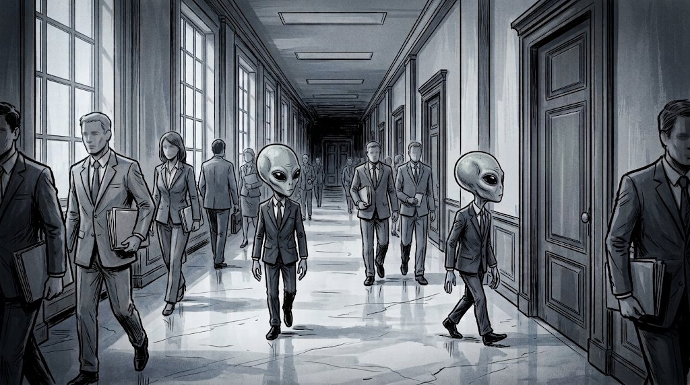
✓ Case validée
24Souvenir · la main
Flashback : une longue main grise se tend vers un cristal violet dans le noir.
Légende (présentation) : If they take the archive, or destroy it, the truth dies with it.
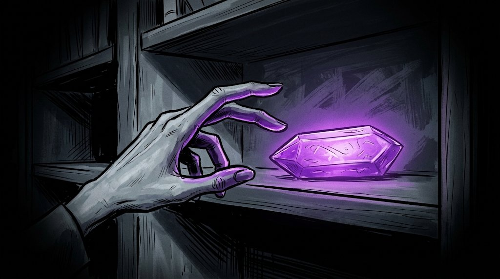
✓ Case validée
25COMMANDE
Retour au présent : COMMANDE penchée sur la table-touret, éclairée en rouge par le disque central ; vue depuis la place d'un membre de l'équipe.
Légende (présentation) : Not on our watch.
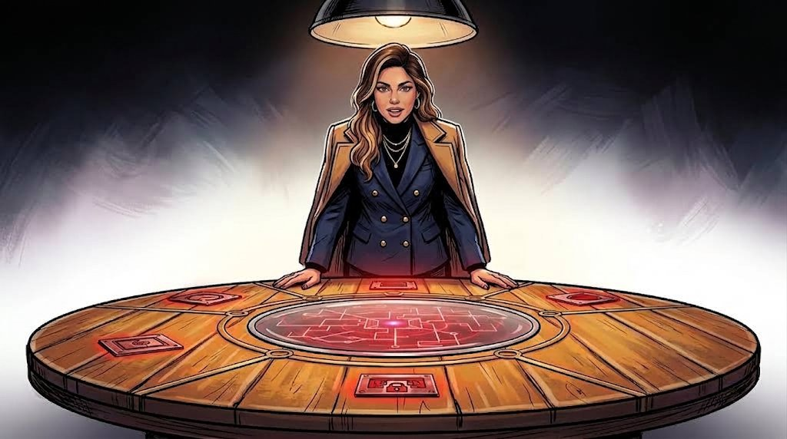
✓ Case validée
26Réaction · SENTINELLE
Gros plan : SENTINELLE, bras croisés dans son fauteuil, le regard dur, éclairé en rouge par son secteur (bouclier).
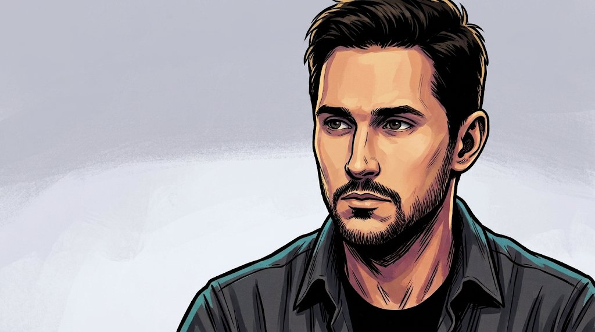
✓ Case validée
27Réaction · FORGE
Gros plan : FORGE, sur son siège de voiture ancienne, lunettes qui reflètent le rouge, déjà un petit sourire de défi.
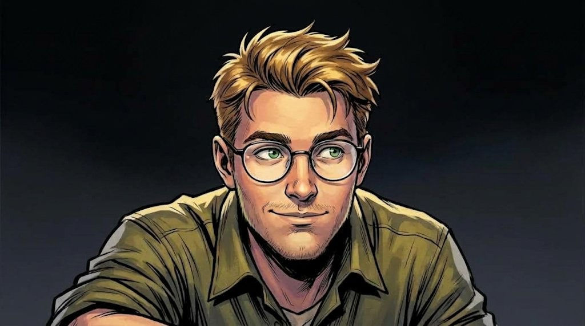
✓ Case validée
28Réaction · CYPHER
Gros plan : CYPHER, qui ne s'intéressait à rien, retire son casque ; pour une fois, il écoute vraiment.
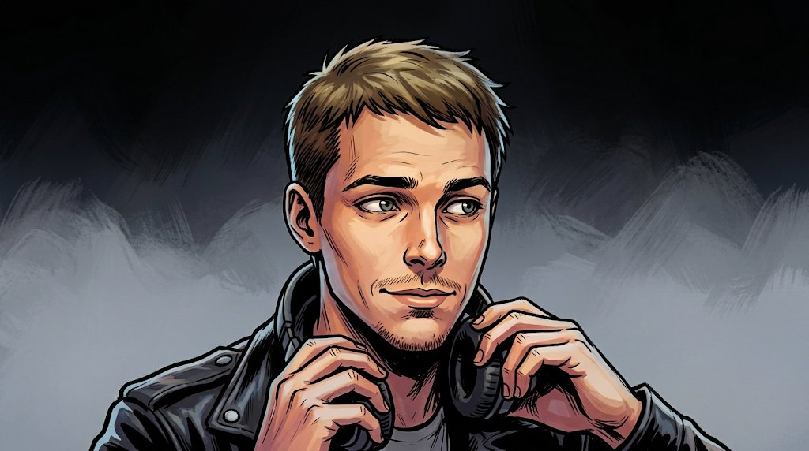
✓ Case validée
29Réaction · RELAY
Gros plan : RELAY dans son pouf, capuche baissée, visage caché ; elle referme son ordinateur. Elle est là.
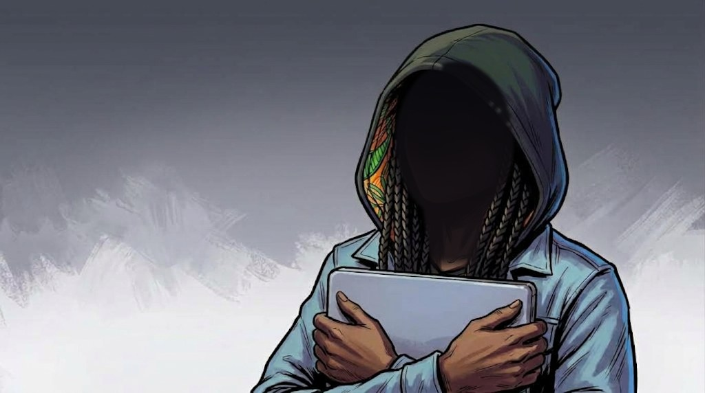
✓ Case validée
 ✓ Portrait validéÀ joindre : uniquement la photo de la personne
✓ Portrait validéÀ joindre : uniquement la photo de la personne